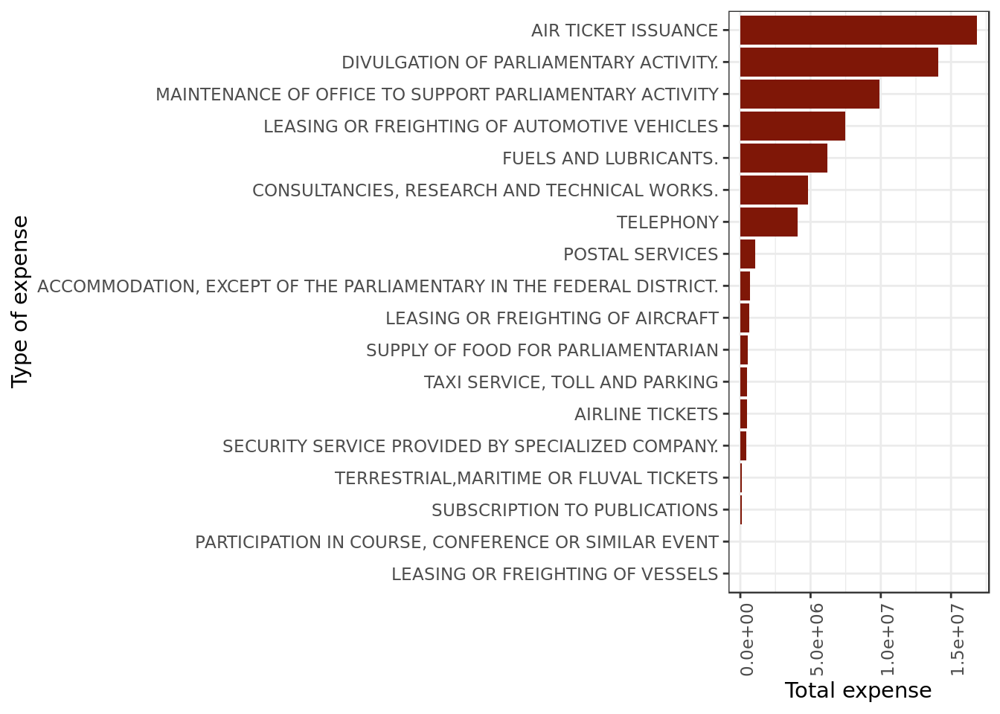

C.E.A.P Analysis
Introduction
This exploratory data analysis was made based on data provided by the Brazilian government about the expenses allowed to its parliamentarians or C.E.A.P. (Cota para o Exercício da Atividade Parlamentar / Quota for the Exercise of Parliamentary Activity). More information about it (in Portuguese) can be found in its official site
Data Overview
data <- read_csv(here::here("evidences/dadosCEAP.csv"),
progress = F,
col_types = cols(
nomeParlamentar = col_character(),
idCadastro = col_integer(),
sgUF = col_character(),
sgPartido = col_character(),
tipoDespesa = col_character(),
especDespesa = col_character(),
fornecedor = col_character(),
CNPJCPF = col_character(),
tipoDocumento = col_integer(),
dataEmissao = col_character(),
valorDocumento = col_double(),
valorGlosa = col_integer(),
valorLíquido = col_double()))
data %>%
mutate(dataEmissao = parse_date_time(dataEmissao,"%Y-%m-%d %H:%M:%S"),
year_month = paste(lubridate::year(dataEmissao), # extract year
lubridate::month(dataEmissao), # extract month
sep = "-"),
tipoDespesa = toupper(tipoDespesa)) -> data
state_info <- read_csv(here::here("/evidences/limiteMensalCEAP.csv"),
progress = F,
col_types = cols(
UF = col_character(),
limite_mensal = col_double()))
data %>%
full_join(state_info,
by = c("sgUF" = "UF")) -> data
data %>%
glimpse()## Observations: 963,452
## Variables: 15
## $ nomeParlamentar <chr> "ABEL MESQUITA JR.", "ABEL MESQUITA JR.", "ABEL …
## $ idCadastro <int> 178957, 178957, 178957, 178957, 178957, 178957, …
## $ sgUF <chr> "RR", "RR", "RR", "RR", "RR", "RR", "RR", "RR", …
## $ sgPartido <chr> "DEM", "DEM", "DEM", "DEM", "DEM", "DEM", "DEM",…
## $ tipoDespesa <chr> "MANUTENÇÃO DE ESCRITÓRIO DE APOIO À ATIVIDADE P…
## $ especDespesa <chr> NA, NA, NA, NA, NA, "Veículos Automotores", "Veí…
## $ fornecedor <chr> "COMPANHIA DE AGUAS E ESGOTOS DE RORAIMA", "COMP…
## $ CNPJCPF <chr> "05939467000115", "05939467000115", "02341470000…
## $ tipoDocumento <int> 0, 0, 0, 0, 0, 0, 0, 0, 0, 0, 0, 0, 0, 0, 0, 0, …
## $ dataEmissao <dttm> 2015-11-14, 2015-12-10, 2015-11-27, 2015-12-30,…
## $ valorDocumento <dbl> 165.65, 59.48, 130.95, 196.53, 310.25, 32.00, 50…
## $ valorGlosa <int> 0, 0, 0, 347, 0, 0, 0, 0, 0, 0, 0, 0, 0, 0, 0, 0…
## $ valorLíquido <dbl> 165.65, 59.48, 130.95, 193.06, 310.25, 32.00, 50…
## $ year_month <chr> "2015-11", "2015-12", "2015-11", "2015-12", "201…
## $ limite_mensal <dbl> 45612.53, 45612.53, 45612.53, 45612.53, 45612.53…read_tsv(here::here("evidences/trsl_expenses.tsv"),
progress = F,
col_types = cols(
original_term = col_character(),
translation = col_character())) -> trsltd_expenses
trsltd_expenses## # A tibble: 18 x 2
## original_term translation
## <chr> <chr>
## 1 MANUTENÇÃO DE ESCRITÓRIO DE APOIO… MAINTENANCE OF OFFICE TO SUPPORT PAR…
## 2 COMBUSTÍVEIS E LUBRIFICANTES. FUELS AND LUBRICANTS.
## 3 CONSULTORIAS, PESQUISAS E TRABALH… CONSULTANCIES, RESEARCH AND TECHNICA…
## 4 DIVULGAÇÃO DA ATIVIDADE PARLAMENT… DIVULGATION OF PARLIAMENTARY ACTIVIT…
## 5 SERVIÇO DE SEGURANÇA PRESTADO POR… SECURITY SERVICE PROVIDED BY SPECIAL…
## 6 PASSAGENS AÉREAS AIRLINE TICKETS
## 7 SERVIÇOS POSTAIS POSTAL SERVICES
## 8 FORNECIMENTO DE ALIMENTAÇÃO DO PA… SUPPLY OF FOOD FOR PARLIAMENTARIAN
## 9 TELEFONIA TELEPHONY
## 10 LOCAÇÃO OU FRETAMENTO DE VEÍCULOS… LEASING OR FREIGHTING OF AUTOMOTIVE …
## 11 LOCAÇÃO OU FRETAMENTO DE EMBARCAÇ… LEASING OR FREIGHTING OF VESSELS
## 12 SERVIÇO DE TÁXI, PEDÁGIO E ESTACI… TAXI SERVICE, TOLL AND PARKING
## 13 EMISSÃO BILHETE AÉREO AIR TICKET ISSUANCE
## 14 HOSPEDAGEM ,EXCETO DO PARLAMENTAR… ACCOMMODATION, EXCEPT OF THE PARLIAM…
## 15 LOCAÇÃO OU FRETAMENTO DE AERONAVES LEASING OR FREIGHTING OF AIRCRAFT
## 16 PASSAGENS TERRESTRES, MARÍTIMAS O… TERRESTRIAL,MARITIME OR FLUVAL TICKE…
## 17 ASSINATURA DE PUBLICAÇÕES SUBSCRIPTION TO PUBLICATIONS
## 18 PARTICIPAÇÃO EM CURSO, PALESTRA O… PARTICIPATION IN COURSE, CONFERENCE …- A translation for the description of each one of the 18 types of expense was recorded alongside its original term.
data %>%
full_join(trsltd_expenses,
by = c("tipoDespesa" = "original_term")) %>%
mutate(tipoDespesa = translation) %>% # translate col tipoDespesa
select(-translation)-> data # drop unused column
data %>%
sample_n(5) %>%
select(nomeParlamentar,
tipoDespesa,
dataEmissao)## # A tibble: 5 x 3
## nomeParlamentar tipoDespesa dataEmissao
## <chr> <chr> <dttm>
## 1 JULIO LOPES TELEPHONY 2015-05-12 00:00:00
## 2 WELLINGTON ROBERTO DIVULGATION OF PARLIAMENTARY ACTI… 2017-06-23 00:00:00
## 3 LEÔNIDAS CRISTINO DIVULGATION OF PARLIAMENTARY ACTI… 2016-10-10 00:00:00
## 4 TADEU ALENCAR SUPPLY OF FOOD FOR PARLIAMENTARIAN 2017-04-27 00:00:00
## 5 MARCO MAIA FUELS AND LUBRICANTS. 2015-03-25 00:00:00- We now have each term in the column tipoDespesa translated.
data %>%
na.omit(year_month) %>%
group_by(year_month) %>% # times used
summarize(total = n()) %>% # by year/month
ggplot(aes(year_month, total)) +
geom_point() +
theme(axis.text.x = element_text(angle = 60,
hjust = 1)) +
labs(x="Year and month", y="Absolute Frequency")
- The period of time covered by the dataset is of about 3 years which amounts to the duration of our parliamentarian’s office minus the 120 days prior to the election.
data %>%
group_by(idCadastro,
nomeParlamentar) %>%
slice(1) %>% # keep one entry for parliamentarian
ungroup() %>%
group_by(sgPartido) %>% # calc parliamentarian
summarize(num_parliament = n()) %>% # by party
na.omit() %>%
ggplot(aes(reorder(sgPartido,
num_parliament),
num_parliament)) +
geom_bar(stat="identity") +
labs(x="Political parties",
y="Number of parliamentarians") +
theme(axis.text.x = element_text(angle = 60,
hjust = 1))
- We can see that PMDB detains the majority of offices followed closely by PT and that PSDB is still a major player. This was to be expected as the aforementioned parties are often regarded as the most proeminent ones in the Brazilian political scene.
Overall spending of the CEAP budget
In this section we’ll look at both the biggest spenders and most frugal parliamentarians.
We’ll examine each group in ranks of 10 parliamentarians, a commonplace in terms of ranking.
Which parliamentarians spent the most?
data %>%
group_by(sgUF,idCadastro,nomeParlamentar) %>% # calculate expense for
summarize(total_expense = sum(valorLíquido)) %>% # each parliamentarian
ungroup() %>%
top_n(n=10, wt=total_expense) %>% # get the top 10 expenders
ggplot(aes(total_expense,
reorder(nomeParlamentar,
total_expense))) +
geom_segment(aes(x = min(total_expense),
y =reorder(nomeParlamentar,
total_expense),
xend = total_expense,
yend = nomeParlamentar),
color = "grey50", size=0.35) +
geom_point(aes(color=sgUF), size=3.5) +
scale_x_continuous(breaks = seq(from = 135E3,
to=1E7,
by = 1E4)) +
theme(axis.text.x = element_text(angle = 30,
hjust = 1)) +
guides(color=guide_legend("State")) +
labs(x="Total Expense (R$)",
y="Parliamentarian name")- The parliamentarian Edio Lopes from the state of Roraima is the biggest spender with a total expense of \(R\$\:1,\!485,\!000.\,00\) (that’s almost 1.5 million reais).
- Edio Lopes spent what the second place Hiran Gonçalves (also from Roraima) spent plus some \(R\$\:55,\!000.\,00\).
- Edio Lopes spent what the tenth place Silas Câmara from the state of Amazonas spent plus some \(R\$\: 80,\!000.\,00\).
- All 10 parliamentarians spent well over 1 million reais, furthermore except for Amazonas none of the states involved are usually pointed as one of the richest Brazilian states.
- Among the states that made to the rank Amazonas would be the most prominent and yet its parliamentarian is right at the bottom of the top 10 rank.
- Half of the big spenders are from the state of Roraima (top three included).
state_info %>%
ggplot(aes(reorder(UF,limite_mensal),
limite_mensal)) +
geom_point() +
scale_y_continuous(breaks = seq(5E2,5E5,1.5E3)) +
labs(y="Montly allowance", x="State")The state of Roraima (RR) has the biggest monthly allowance in the whole country which is approximately \(R\$\:45,\!500.\,00\). It makes sense that their parliamentarians are among the biggest spenders in the whole country.
The federal district (DF), where’s the capital, has the smallest allowance which is a little more than \(R\$\:30,\!500.\,00\). A parliamentarian who lives there is already close to the capital so doesn’t have to travel by plane and probably already has a house there, so the smaller allowance is to be expected.
Which parliamentarians spent less?
data %>%
group_by(sgUF,idCadastro,nomeParlamentar) %>% # calculate expense for
summarize(total_expense = sum(valorLíquido)) %>% # each parliamentarian
ungroup() %>%
filter(total_expense >= 0) %>% # Remove those without actual net amount
arrange(total_expense) %>% # Order by total expense
slice(1:10) %>% # Get the top 10 frugal
ggplot(aes(total_expense,
reorder(nomeParlamentar,
total_expense))) +
geom_segment(aes(x = 0,
y = reorder(nomeParlamentar,
-total_expense),
xend = total_expense,
yend = nomeParlamentar),
color = "grey50", size=0.35) +
geom_point(aes(color=sgUF), size=3.5) +
scale_x_continuous(breaks = seq(from = 0,
to=1E5,
by = 20)) +
guides(color=guide_legend("State")) +
labs(x="Total Expense (R$)",
y="Parliamentarian name")Going against what one would expect none of the more frugal parliamentarians are from the Federal District (DF) which has the smallest monthly allowance.
- Our frugal friends live in other states so they had to travel and pay for accommodations. So, how did they pay for the aforementioned expenses? Did it come from their own pockets?
- The parliamentarian Camilo Cola spent a astonishingly small sum, this demands a closer look.
A closer look at the 3 most frugal parliamentarians in Brazil
Let’s look at the exact values for the top 3 most frugal parliamentarians
data %>%
group_by(sgUF,idCadastro,nomeParlamentar) %>%
summarize(total_expense = sum(valorLíquido)) %>%
ungroup() %>%
filter(total_expense >= 0) %>%
arrange(total_expense) %>%
slice(1:3)## # A tibble: 3 x 4
## sgUF idCadastro nomeParlamentar total_expense
## <chr> <int> <chr> <dbl>
## 1 ES 141395 CAMILO COLA 0.62
## 2 MS 178899 MARCIO MONTEIRO 14.2
## 3 PR 146613 MARCELO ALMEIDA 26.2- The total expense of the top 3, specially Camilo Cola who spent only \(R\$\:0.\,62\) seems almost ludicrous.
data %>%
select(sgUF,fornecedor,
nomeParlamentar,
sgPartido,tipoDespesa) %>%
filter(nomeParlamentar %in%
c("CAMILO COLA",
"MARCIO MONTEIRO",
"MARCELO ALMEIDA"))## # A tibble: 3 x 5
## sgUF fornecedor nomeParlamentar sgPartido tipoDespesa
## <chr> <chr> <chr> <chr> <chr>
## 1 ES RAMAL CAMILO COLA PMDB TELEPHONY
## 2 PR RAMAL MARCELO ALMEIDA PMDB TELEPHONY
## 3 MS RAMAL MARCIO MONTEIRO PSDB TELEPHONY- The only expense of each of the 3 parliamentarians was related to telephony. Most likely something they couldn’t pay for themselves in reason of bureaucracy.
Camilo Cola
Looking up the most frugal parliamentarians in Brazil we can have an idea of who he is. Originally very poor, Camilo Cola is a self made businessman and founder of a whole bussiness empire called Grupo Itapemirim. When Camilo first became a parliamentarian he was over 80 years old.
Camilo Cola seems the type of man that would pay for pretty much all of his expenses as parliamentarian.
Marcelo Almeida
Our second place Marcelo Almeida was pointed as the richest parliamentarian in Brazil by the portal ‘Uol Eleições’ in 2014.
It’s likely that our second place, ‘the richest parliamentarian in Brazil’, would pay for most of his expenses.
Marcio Monteiro
Our third place Marcio Monteiro quickly left his position as parliamentarian and from then on his office was occupied by his substitute Elizeu Dionízio.
The third place simply didn’t have enough time to spend any money.
Looking at spending by state
In this section we’ll look at the parliamentary expenses paid for with the CEAP budget from the point of view of the states these parliamentarians represent.
When talking about the parliamentarians themselves we’ll keep our ranking of 10 parliamentarians. However, when examining the states we’ll adopt a ranking of 3 states. Talking about 10 states means talking about almost half the states, which would be cumbersome.
Parliamentarians from which states spent the most abroad? And the less?
data %>%
filter(tipoDocumento == 2) %>% # Keep only expenses abroad
group_by(sgUF) %>% # group by State
summarize(international_expense = sum(valorLíquido)) %>% # calc expense by state
ggplot(aes(reorder(sgUF,international_expense),
international_expense)) +
geom_bar(stat = "identity") +
labs(x="States", y="Expenses abroad (R$)")- Parliamentarians from Maranhão, Paraíba and Pará spent the less abroad.
- The three states are less prominent (smaller gross domestic product for instance) so it makes sense their parliamentarians would spend less abroad.
- Maranhão spendings are incredibly small, a closer look is due.
- Parliamentarians from São Paulo, Minas Gerais and Pernambuco spent the most abroad
- São Paulo and Minas Gerais and in lesser degree Pernambuco are some of the richest states in Brazil.
data %>%
filter(tipoDocumento == 2) %>% # keep only expenses abroad
filter(sgUF == "MA") %>% # keep only expenses from MA
select(fornecedor,
tipoDespesa,
valorLíquido,
nomeParlamentar,
sgUF,
sgPartido)## # A tibble: 1 x 6
## fornecedor tipoDespesa valorLíquido nomeParlamentar sgUF sgPartido
## <chr> <chr> <dbl> <chr> <chr> <chr>
## 1 7 ELEVEN SUPPLY OF FOOD F… 41.0 JUNIOR MARRECA MA PEN- The whole international expense made by all the parliamentarians from the state of Maranhão was some meal bought at a convenience store. For the looks of the chain of convenience stores it was most likely fast food.
Which parliamentarians violated the CEAP budget set by their state the most?
data %>%
group_by(sgUF,idCadastro,year_month, # group by parliamentarian
nomeParlamentar,limite_mensal) %>% # and vars of interest
summarise(monthly_expense = sum(valorLíquido)) %>% # calc expense by month/year
filter(year_month != "NA-NA") %>% # remove expense without a month/year
filter(monthly_expense > limite_mensal) %>% # keep only violations
ungroup() -> expense_month_year
#
expense_month_year %>%
select(nomeParlamentar,
year_month,
limite_mensal,
monthly_expense) %>%
sample_n(5)## # A tibble: 5 x 4
## nomeParlamentar year_month limite_mensal monthly_expense
## <chr> <chr> <dbl> <dbl>
## 1 CAJAR NARDES 2016-9 40876. 56009.
## 2 RÔMULO GOUVEIA 2016-1 42033. 50728.
## 3 JUTAHY JUNIOR 2016-6 39011. 60907.
## 4 WALDIR MARANHÃO 2016-12 42152. 82388.
## 5 AELTON FREITAS 2015-10 36093. 48787.- We now have the monthly expense of the parliamentarians that violated their respective monthly allowance.
expense_month_year %>%
group_by(idCadastro,nomeParlamentar) %>% # group only by parliamentarian
arrange(desc(monthly_expense)) %>% # order by month/year expense
slice(1) %>% # keep biggest expense of each parliamentarian
ungroup() %>%
top_n(n=10, wt=monthly_expense) %>% # get overall top 10 month/year expenses
mutate(overbudget = monthly_expense - limite_mensal) %>% # calc actual overbudget
ggplot(aes(overbudget,
reorder(nomeParlamentar,
overbudget))) +
geom_segment(aes(x = 1E5,
y =reorder(nomeParlamentar,
overbudget),
xend = overbudget,
yend = nomeParlamentar),
color = "grey50",
size=0.35) +
geom_point(aes(color=sgUF),size=3) +
labs(x="Overbudget (R$)",
y="parliamentarians")- At the top of the rank we have Pastor Eurico who managed to spend over R$ 180,000 more than he should in a single month.
- All of our ranked parliamentarians for some reason had to spend way over R$ 100,000 than they should have in the period of a single month.
At which states the parliamentarians spent the most with airfare ? And the less?
We will consider both the cost of air tickets themselves and the cost of their issuance.
data %>%
filter(tipoDespesa %in%
c("AIRLINE TICKETS",
"AIR TICKET ISSUANCE")) %>% # keep only fligths
group_by(sgUF) %>%
summarize(international_expense = sum(valorLíquido)) %>%
filter(sgUF != "NA") %>%
ggplot(aes(reorder(sgUF,international_expense),
international_expense)) +
geom_bar(stat = "identity") +
labs(x="States", y="Flight expense")States where parliamentarians spent most with airfare
- We have São Paulo - SP, Amazonas - AM, Rio de Janeiro - RJ and Minas Gerais - MG.
- São Paulo, Amazonas, Rio de Janeiro and Minas Gerais count among the richest states in the country.
- São Paulo, Amazonas, Rio de Janeiro and Minas Gerais count among the richest states in the country.
States where parliamentarians spent less with airfare
- We have Distrito Federal - DF, Goiás - GO and Tocantins - TO.
- The capital is in Distrito Federal, so not a lot of reasons to fly around.
- Distrito Federal is actually within the borders of Goiás and Tocantins is right next to Goiás itself.
Taking a closer look at Paraíba
In this section we’ll pay closer attention to the state of Paraíba. We’ll examine which political parties are the most avid and the most restrained spenders in terms of frequency and overall cost.
We’ll put the political parties in rankings of 3, a number we consider reasonable as our examination covers a total of 12 political parties.
In which parties the parliamentarians used CEAP more frequently? In which did they use it less frequently?
data %>%
filter(sgUF == "PB") %>% # keep only PB
na.omit(sgUF,
sgPartido) %>%
group_by(sgPartido) %>%
summarize(frequency =n()) %>% # calc num of times
ggplot(aes(reorder(sgPartido,frequency),
frequency)) +
geom_bar(stat = "identity") +
labs(x="Parties", y="Absolute frequency")- The parties PMDB (Brazilian Democratic Movement | centre to centre-right), PP (Progressistas | right-wing) and SD (Solidariedade | centre-left) are by far the ones that used CEAP the most times.
- In the case of PMDB it was to be expected as it detains the majority of offices.
- The parties PSC (Social Christian Party | centre-right) and PROS (Republican Party of the Social Order | centre-right) are by far the ones that have used CEAP the least times.
- The third party to have used CEAP the least times PT (Workers’ Party | centre-left to left-wing) still used CEAP many times more than PSC and PROS.
In which parties the parliamentarians spent the most from CEAP? In which they spent the less?
data %>%
filter(sgUF == "PB") %>% # keep only PB
na.omit(sgUF,
sgPartido,
valorLíquido) %>%
group_by(sgPartido) %>%
summarize(total_expense = sum(valorLíquido)) %>% # calc total expense
ggplot(aes(reorder(sgPartido,total_expense),
total_expense)) +
geom_bar(stat = "identity") +
labs(x="Parties", y="Total expense")- PMDB (Brazilian Democratic Movement | centre to centre-right) is by far the party that spent the most in Paraíba, which was to be expected as PMDB detains the majority of offices.
- Second place PSD (Social Democratic Party | centre) and third place and DEM (Democrats | centre-right to right) total expenses are far below the biggest spender.
- The parties PSC (Social Christian Party | centre-right) and PROS (Republican Party of the Social Order | centre-right) both spent very little compared to the rest and are clearly the parties that spent less in Paraíba.
- The third party to spend less PTB (Brazilian Labour Party | centre-right) still has a total expense considerably bigger than that of PSC and PROS.
Looking at spending by political party
At this section we’ll look closely at the expenses of three of the major political parties in Brazil: PT, PSDB and PMDB. Candidates from PT and PSDB are often the competitors at the run-off election for presidency and PMDB often holds the parliamentary majority (as is the case in this dataset). These are only some of the evidences of the importance of the chosen parties in the Brazilian political scene.
What type of expense is more frequently paid for with CEAP by parliamentarians of these parties?
PSDB
data %>%
filter(sgPartido %in% c("PSDB")) %>% # keep only PSDB
group_by(tipoDespesa) %>%
summarize(frequency = n()) %>% # calc total times
ggplot(aes(reorder(tipoDespesa,frequency),
frequency)) +
geom_bar(stat="identity",
fill="#1E347F") +
labs(y= "Absolute Frequency",
x="Type of expense") +
coord_flip() +
theme(axis.text.x = element_text(angle = 90,
hjust = 1))- Air Tick Issuance is the type of expense most frequently paid for with CEAP by parliamentarians from PSDB. Next follows Fuel and Lubricants and Telephony.
PMDB
data %>%
filter(sgPartido %in% c("PMDB")) %>% # keep only PMDB
group_by(tipoDespesa) %>%
summarize(frequency = n()) %>% # calc total times
ggplot(aes(reorder(tipoDespesa,frequency),
frequency)) +
geom_bar(stat="identity",
fill="#7F6607") +
labs(y= "Absolute Frequency",
x="Type of expense") +
coord_flip() +
theme(axis.text.x = element_text(angle = 90,
hjust = 1))- Air Tick Issuance is the type of expense most frequently paid for with CEAP by parliamentarians from PMDB. Next follows Fuel and Lubricants and Telephony.
PT
data %>%
filter(sgPartido %in% c("PT")) %>% # keep only PT
group_by(tipoDespesa) %>%
summarize(frequency = n()) %>% # calc total times
ggplot(aes(reorder(tipoDespesa,frequency),
frequency)) +
geom_bar(stat="identity",
fill="#7F1707") +
labs(y= "Absolute Frequency",
x="Type of expense") +
coord_flip() +
theme(axis.text.x = element_text(angle = 90,
hjust = 1))- Air Tick Issuance is the type of expense most frequently paid for with CEAP by parliamentarians from PT. Next follows Fuel and Lubricants and Taxi Service, Toll and Parking.
Summary
Across all three parties the expense most frequently paid for with CEAP is Air Tick Issuance, followed by Fuel and Lubricants. The third place is Telephony for PSDB and PMDB and Taxi Service, Toll and Parking for PT.
What type of expense paid for with CEAP by parliamentarians of these parties costed more?
PSDB
data %>%
filter(sgPartido %in% c("PSDB")) %>% # keep only PSDB
group_by(tipoDespesa) %>%
summarize(expense = sum(valorLíquido)) %>% # calc total expense
ggplot(aes(reorder(tipoDespesa,expense),
expense)) +
geom_bar(stat="identity",
fill="#1E347F") +
labs(y= "Total expense",
x="Type of expense") +
coord_flip() +
theme(axis.text.x = element_text(angle = 90,
hjust = 1))- The costlier expense for PSDB is Air Tick Issuance followed by Divulgation of Parliamentary Activity and Maintenance of Office to support Parliamentary Activity.
PMDB
data %>%
filter(sgPartido %in% c("PMDB")) %>% # keep only PMDB
group_by(tipoDespesa) %>%
summarize(expense = sum(valorLíquido)) %>% # calc total expense
ggplot(aes(reorder(tipoDespesa,expense),
expense)) +
geom_bar(stat="identity",
fill="#7F6607") +
labs(y= "Total expense",
x="Type of expense") +
coord_flip() +
theme(axis.text.x = element_text(angle = 90,
hjust = 1))- The costlier expense for PMDB is Divulgation of Parliamentary Activity followed by Air Ticket Issuance and Leasing or Freighting of Automotive Vehicles.
PT
data %>%
filter(sgPartido %in% c("PT")) %>% # keep only PT
group_by(tipoDespesa) %>%
summarize(expense = sum(valorLíquido)) %>% # calc total expense
ggplot(aes(reorder(tipoDespesa,expense),
expense)) +
geom_bar(stat="identity",
fill="#7F1707") +
labs(y= "Total expense",
x="Type of expense") +
coord_flip() +
theme(axis.text.x = element_text(angle = 90,
hjust = 1))
- The costlier expense for PT is Air Ticket Issuance followed by Divulgation of Parliamentary Activity and Maintenance of Office to support Parliamentary Activity.
Summary
PT and PSDB have the same three costlier expenses Air Ticket Issuance, Divulgation and Office Maintenance. Unlike the other for PMDB Divulgation is costlier than Air Ticket Issuance and Vehicle Renting/Freighting takes the spot from Office Maintenance.